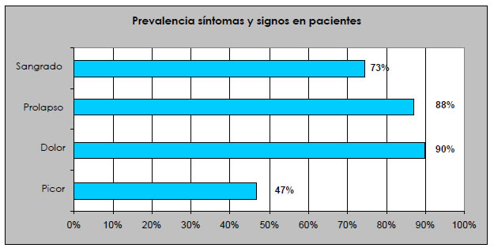
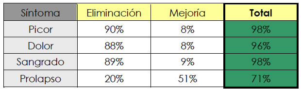
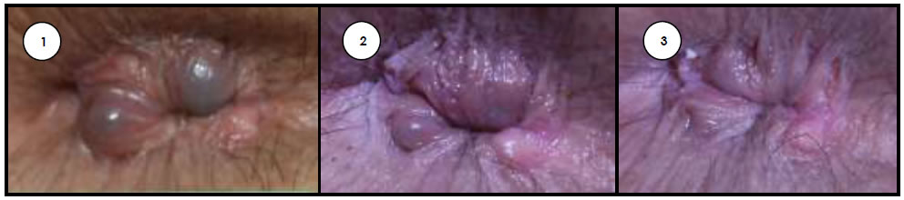
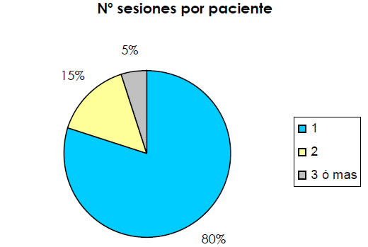

TRATATAMIENTO DE HEMORROIDES CON MICROESPUMA℗
INTRODUCCIÓN
Las molestias ocasionadas por las hemorroides, sin ser una patología grave, están presentes y marcan la vida de un gran número de personas. Con una prevalencia difícil de establecer, se estima que hasta un 50% de la población en el mundo occidental puede llegar a padecerlas, número que va aumentando parejo a la edad, con mayor incidencia entre los 45 y 65 años.
Aclarar que hablamos de “molestias causadas” por las hemorroides pero que éstas son estructuras anatómicas normales que, por sí mismas, no causan perjuicio alguno. Localizadas en la ampolla rectal (último segmento del intestino grueso), están presentes en todos los seres humanos. Entonces, ¿qué las convierte en culpables de los variados padecimientos que se les achacan? La respuesta es simple: el aumento de la presión en el suelo pélvico, lo cual hace que unas estructuras parecidas a pequeños “ovillos” venosos (difícilmente visibles en la exploración normal a través de anoscopio) se “carguen” de sangre, aumentando exponencialmente de tamaño.
De entre las múltiples causas que producen este hecho, la principal (ya que puede afectar a cualquier segmento de la población) es el estreñimiento, favorecido por los cambios en nuestra hábitos dietéticos tradicionales (elevado consumo de productos ultraprocesados, derivados de la carne, etc, y descenso de los ricos en fibra). Esto conduce a heces “más duras” y difíciles de ser expulsadas, que precisan un mayor esfuerzo defecatorio y, por tanto, elevan la compresión de la zona. Tampoco es desdeñable un mal hábito muy extendido actualmente: la prolongación de forma innecesaria del tiempo que pasamos sentados en el retrete por culpa de móviles, tablets y variopintos pasatiempos.
Otros motivos también implicados en la etiopatogenia de las hemorroides son las gestaciones (más a mayor número, si son gemelares, si el parto es natural y/o requiere mucho esfuerzo, etc.), la obesidad, profesiones que fomentan la sedestación (camioneros, taxistas) y/o bipedestación mantenida (hostelería, cocina) y patologías del aparato digestivo que alteran el normal peristaltismo (como el Síndrome de Colon Irritable).
Respecto a los síntomas y signos habituales de la patología hemorroidal encontramos el picor (prurito), el escozor, el dolor (relacionado o no con la defecación), el sangrado (rectorragia) y el prolapso (salida a través del agujero anal). Dentro de este último se puede distinguir entre las hemorroides que, siendo internas, protruyen hacia afuera (con más o menos frecuencia) o bien aquéllas que, establecidas ya de forma permanente alrededor del ano, forman una suerte de pliegues cutáneos (plicaturas).
En el siguiente gráfico se muestra la prevalencia de los mencionados síntomas y signos identificados (al menos uno) en nuestros pacientes:

Gráfica 1: frecuencia de presentación de síntomas y signos por los que los pacientes acuden a consulta
LA TÉCNICA
Comienza por la confección de la historia clínica. No todas las molestias de la zona perianal están provocadas por las hemorroides, razón por la que es necesaria una minuciosa inspección y exploración para, junto a la anamnesis, identificar (y también tratar cuando es posible) otras patologías concomitantes como micosis, fisuras, excoriaciones, trombosis o crisis inflamatorias, etc. Así, afinando en los diagnósticos, aumenta la probabilidad de éxito y disminuye la de aparición de efectos secundarios indeseables.
Hecho esto procedemos a nuestra técnica, la cual se basa en la inyección, con una finísima aguja y en los paquetes hemorroidales pertinentes, de la Microespuma℗, una novedosa forma farmacéutica inventada y patentada por el Dr. Juan Cabrera. A tal fin, nos valemos de unos anoscopios de pequeño diámetro que, convenientemente lubricados, permiten acceder a la ampolla rectal con facilidad y así localizar las áreas a tratar.
Con este proceder, de forma ambulatoria y sin necesidad de anestesia, el paciente sale de la consulta tras 10 – 15 minutos, sin mayor contratiempo.
Durante las 3 – 4 semanas posteriores, de aparecer molestias, éstas suelen ser leves o moderadas y por lo general de fácil control con analgésicos comunes, a diferencia del muy doloroso post – operatorio asociado a la intervención quirúrgica tradicional.
RESULTADOS
La Microespuma℗ busca inducir una “curación por segunda intención”, es decir, actúa desencadenando una respuesta fisiológica sobre las hemorroides tratadas que provoca, en el plazo aproximado de un mes, su reducción y, consecuentemente, la disminución o desaparición de los síntomas y/o signos iniciales:

Tabla 1: Evolución de síntomas y signos tras tratamiento
De esta forma, según se muestra en la tabla de más arriba, conseguimos un alto porcentaje de éxito (por encima del 95%) para síntomas tales como el picor, dolor y sangrado. Es también por lo general una técnica efectiva para el prolapso, siempre y cuando no se trate de las plicaturas (pliegue cutáneo perianal) antes mencionadas:

Eliminación de prolapso tras una única sesión de tratamiento (26/09/17) (1), con fotos evolutivas (10/10/17) (2) y post (24/10/17) (3)
Para conseguir estos resultados pueden requerirse varias sesiones, si bien en el 80% de los casos ha sido suficiente tan solo una visita.

Gráfica 2: número de sesiones por paciente y tratamiento
CONCLUSIONES
Nuestra técnica de escleroterapia de hemorroides con Microespuma℗, exclusiva de Clínicas Dr. Juan Cabrera y presentada con gran éxito en 2014 durante el congreso anual de la Sociedad Americana de Flebología (ACP), se erige en un método fiable para conseguir, con unas pocas sesiones (normalmente 1 ó 2) de corta duración y totalmente ambulatorias, controlar los principales síntomas de la enfermedad hemorroidal (dolor, escozor, picor y sangrado). Es un tratamiento efectivo, seguro y altamente satisfactorio para pacientes con esta dolencia, independientemente de su grado de desarrollo, y que permite evitar el temible (por molesto y desagradable) postoperatorio asociado a las técnicas quirúrgicas.
Dr. Gonzalo López
Especialista en flebología. Doctor en Ingeniería Tisular, especialidad en BiomaterialesClínica Dr. Juan Cabrera (A Coruña)
Productos Y Servicios
Si quieres conocer nuestra gama de productos más detalladamente y de manera cómoda aquí puedes ver todos nuestros productos
ver másContacta
¿Alguna duda acerca de nuestros productos o servicios? Aquí tienes todas las formas de contactar con nosotros
ver masTe Llamamos Gratis
Si tienes alguna pregunta sobre nuestros productos o servicios o necesitas consejos sobre algo relacionado con nuestro negocio, por favor déjanos un teléfono fijo o número de teléfono móvil y te llamamos gratis.
ver mas